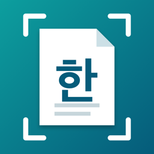

개인정보 처리방침
시행일: 2026년 10월 6일
수집하는 정보
HWP 변환기는 어떤 개인정보도 수집하지 않습니다. 계정, 광고, 분석 도구, 추적 기능이 없으며 개발자가 운영하는 서버도 없습니다.
카메라와 사진
카메라는 사용자가 ‘종이 문서 스캔’을 고를 때만 사용합니다. 사진은 사용자가 고른 사진만 읽습니다. 찍거나 고른 이미지와 PDF는 이 기기 안에서 글자와 표를 인식하는 데만 쓰이며 외부로 전송되지 않습니다.
만든 파일
변환한 HWPX 파일은 이 기기의 앱 폴더(파일 앱 › 나의 iPhone › 한글 변환기)에만 저장됩니다. 파일을 보내는 것은 사용자가 직접 선택했을 때만 iOS 공유 기능으로 이루어집니다.
구입
앱 구입은 Apple이 처리하며 개발자는 결제 정보를 받지 않습니다.
문의
English
HWP Converter does not collect any personal data. There are no accounts, ads, analytics, tracking or developer servers. The camera is used only when you choose to scan, and only the photos you pick are read. Images and PDFs are processed on your device to recognize text and tables and are never transmitted. Converted files stay in the app's folder on your device; sharing happens only when you choose it through the iOS share sheet. Purchases are handled by Apple. Contact: ppupy1200@gmail.com